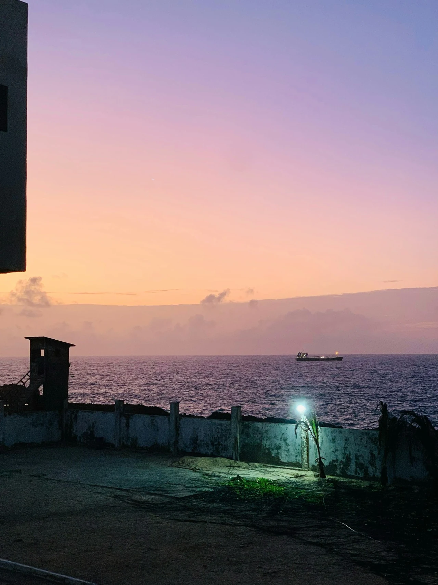

The Edge of Evening
Street Photography by Uncanny Stranger


A pink evening sky above the ocean and a rooftop terrace.
From the original Uncanny Stranger collection: a study of light, place and everyday life.
Explore all 41 photographs →